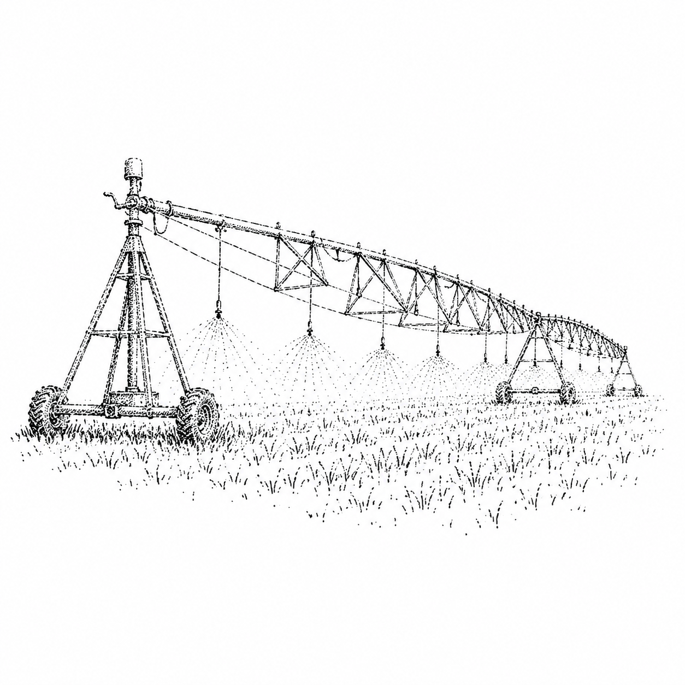

Somewhere right now, a grower is standing at the edge of a field, deciding whether to run the pivot tonight. The forecast says one thing, the soil says another, and the cost of being wrong runs in both directions. Water too early and you spend it, along with the energy and the money it takes to move it. Wait too long and the crop pays for it in yield you never get back.
For most of farming's history that call has come down to experience and a hand in the dirt. That instinct is real and it is hard won. But it is being asked to do more every season, against weather that is harder to read, water that costs more than it used to, and margins that leave less room for a missed guess.
The information that could sharpen the decision already exists. Soil moisture, evapotranspiration, weather models, crop water demand. It just lives in a dozen disconnected places, in formats built for researchers rather than for the person actually turning the valve. So most of it goes unused, and the most important decision on the farm stays a guess dressed up as a routine.
We started Irrigant to close that gap. Helios, our first product, pulls field conditions, weather, and crop water needs into one clear call: water or wait, how much, and when. It is not there to replace the grower's judgment. It is there to give that judgment a forecast to stand on, a few days before the field forces the issue.
We think the future of irrigation looks less like watering on a calendar and more like watering on the truth of the field. Less guessing, less waste, more water left for the next dry year. That is the whole idea behind the name. Every drop that goes onto a field cost something to put there, and we want every one of them to count.